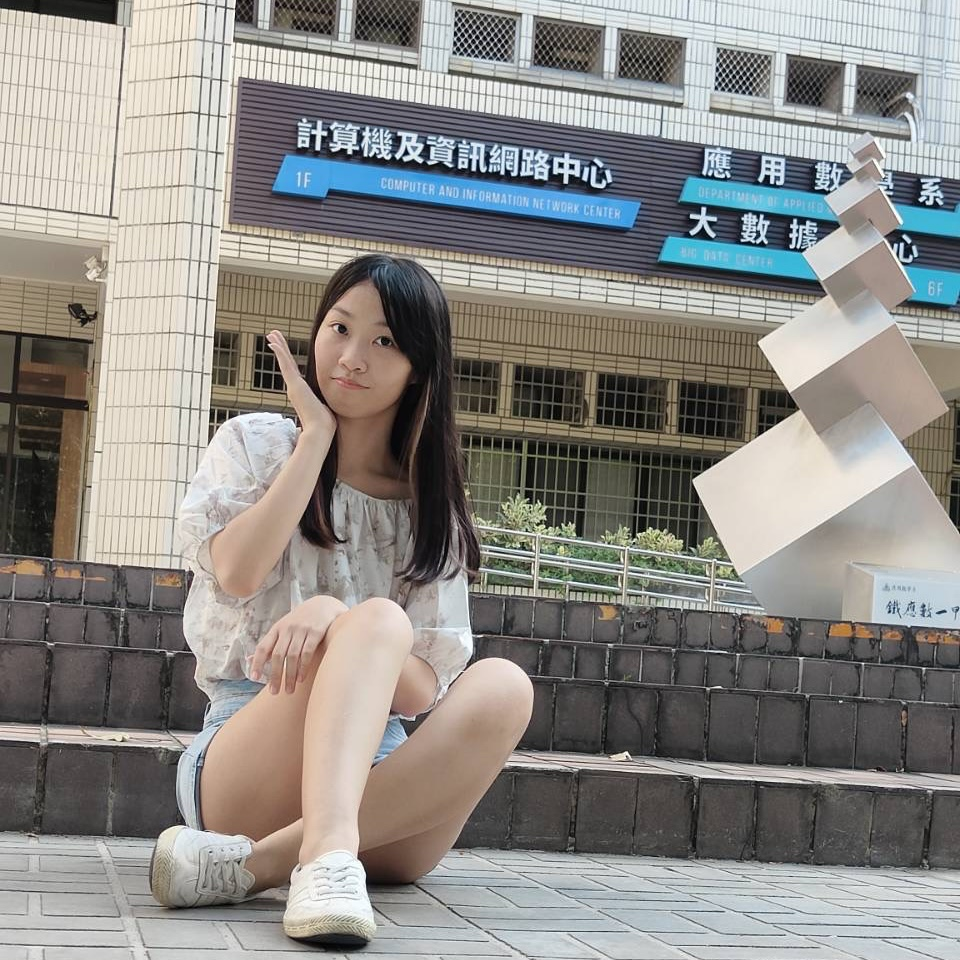
～網頁說明～
- 這個顏色是含有連結的文字。
- 「自傳、活動、專題、其他」大項下都各5個副主題。
- 「副主題」「有➜的照片」跟「證照」區塊可以左右滑動。
- 右下角有「置頂鍵」的輔助按鈕
- 看到有 ‹ › 都是有自動輪播效果,按下即可切換內容。
- ✩需要目錄請按我✩
我的自傳：家庭背景、學習歷程、研究實習、就讀動機、讀書計畫
活動幹部：競賽研習(3)、營隊志工(5)、幹部經歷、活動總召(3)
專題/課堂：企業實習、專題、課堂表現、教學經歷(3)、網頁作品
其他相關：skill、成績單、證照(8)、about_me、獎助學金
活動幹部：競賽研習(3)、營隊志工(5)、幹部經歷、活動總召(3)
專題/課堂：企業實習、專題、課堂表現、教學經歷(3)、網頁作品
其他相關：skill、成績單、證照(8)、about_me、獎助學金
家庭背景
到不同地區生活
出生
高雄內門
高中
高雄楠梓
大學
台中沙鹿
實習
桃園楊梅
......................................................
學習歷程
研究/實習
就讀動機
未來規劃
-
短期-研究所入學前1.在企業實習中學到更多技能23e考到5張以上的相關證照23e打好資料庫觀念及技巧23e
-
中期-研究所階段1.繼續專精分析能力23e2.嘗試更多不同數據型態的分析23e
-
長期-未來展望1.依照專業從事相關工作23e
競賽研習
2022 統計科學營
時間：2022.8.25~26
地點：中研院
性質：培訓
佐證資料：研習證書
地點：中研院
性質：培訓
佐證資料：研習證書

2021 金象盃全國大數據實務能力競賽
性質：競賽
舉辦單位： 成功大學和虎尾科大
佐證資料：參與證書
成績：優勝
舉辦單位： 成功大學和虎尾科大
佐證資料：參與證書
成績：優勝
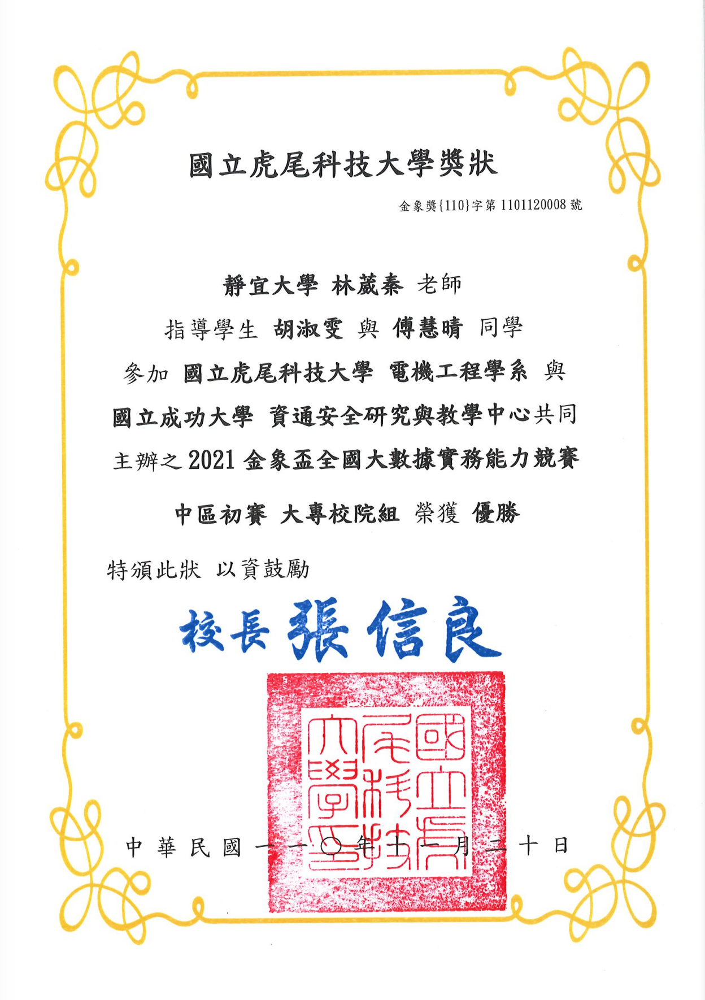
2022 南山領袖營
時間：2021.7.6~7
地點：台中
性質：營隊培訓
佐證資料：參訓證明
地點：台中
性質：營隊培訓
佐證資料：參訓證明

營隊志工
2022 科技品格夏令營
時間：2022.7.18~22
地點：中華經典研究會
職位：營隊隊輔
佐證資料：研習證書
地點：中華經典研究會
職位：營隊隊輔
佐證資料：研習證書
因為學長的介紹，參加了這個營隊，其他隊輔95%都比我年紀還小，但是志工經驗一個比一個豐富，在這裡除了帶小朋友跟他們相處，希望能為彼此生命"增添"多點色彩。
➜
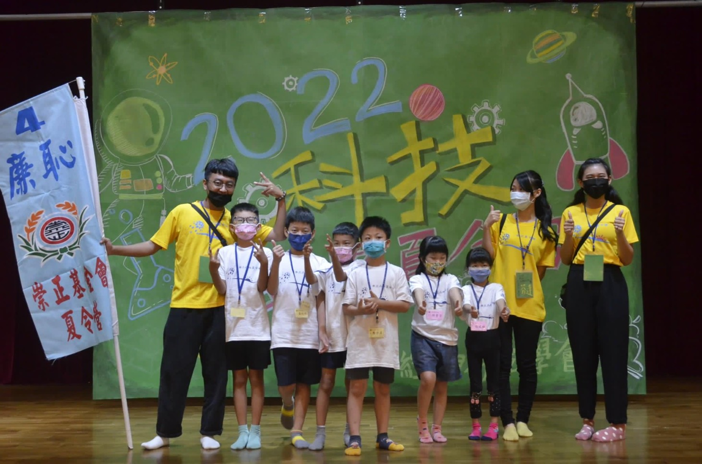
➜

➜
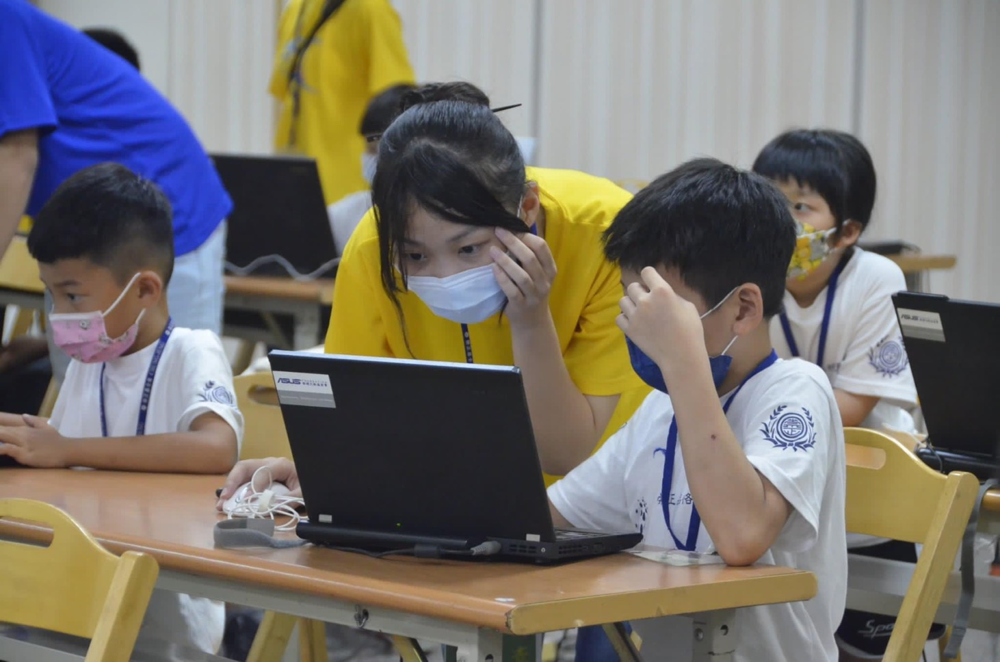
➜
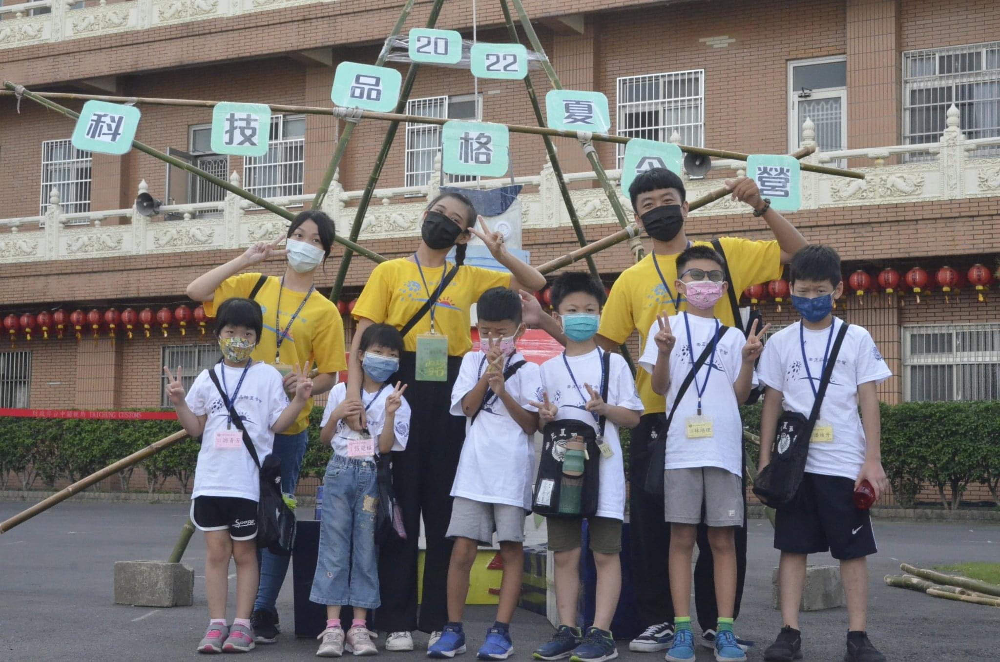
➜
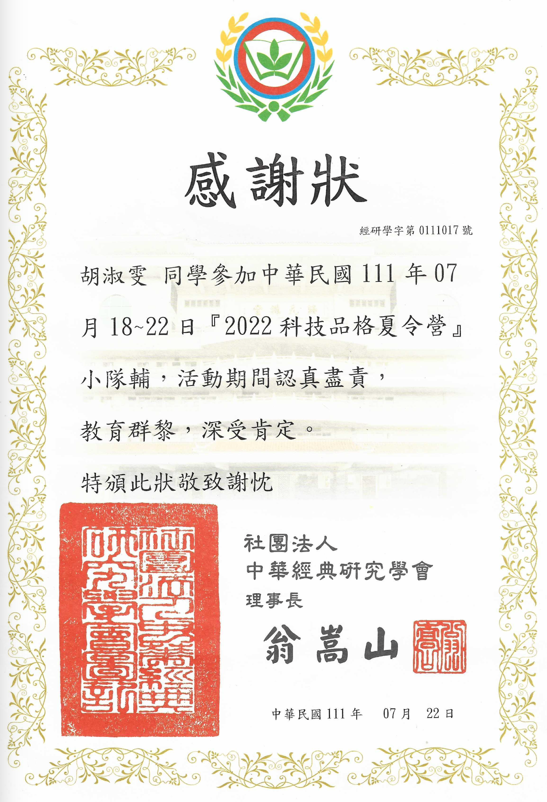
➜
因為學長的介紹，參加了這個營隊，其他隊輔95%都比我年紀還小，但是志工經驗一個比一個豐富，在這裡除了帶小朋友(6位)跟他們相處，希望能為彼此生命多點色彩。
中小服務
時間：2022.4
地點：台中 北勢國小
職位：社團志工
佐證資料：志工證明
地點：台中 北勢國小
職位：社團志工
佐證資料：志工證明
在小學早自習的時段走入教室，帶著他們手作，雖然可能每次活動都有一些小意外，但是意外可以讓活動變得有趣，也看到其他人為了活動而付出心力，認真的教學，整個過程十分的融洽。

➜
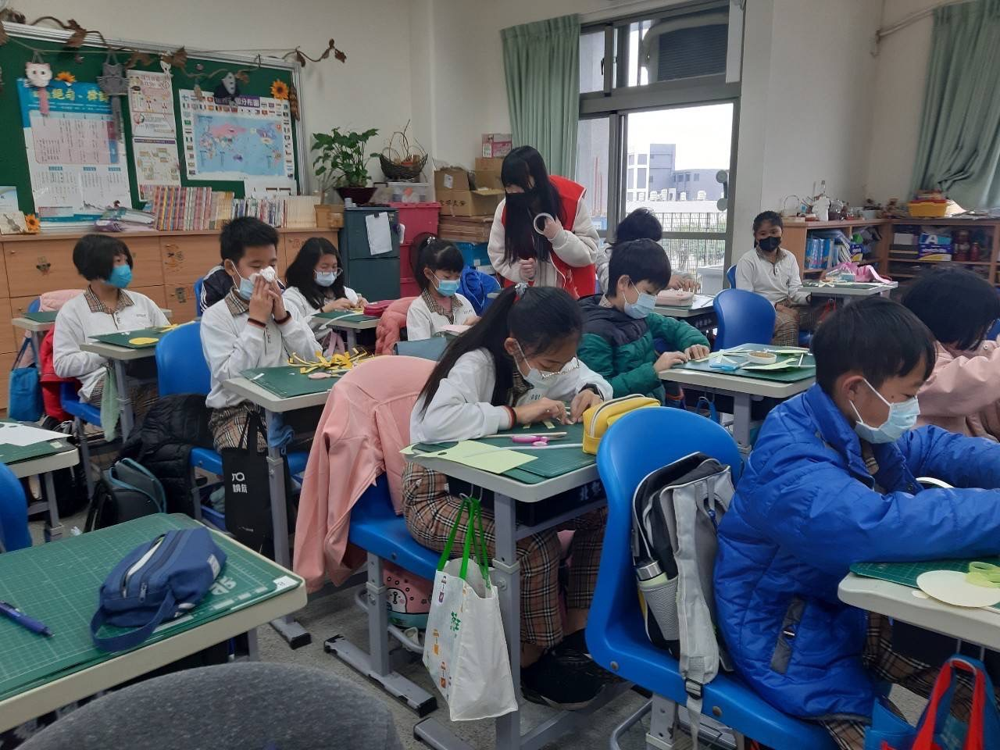
➜
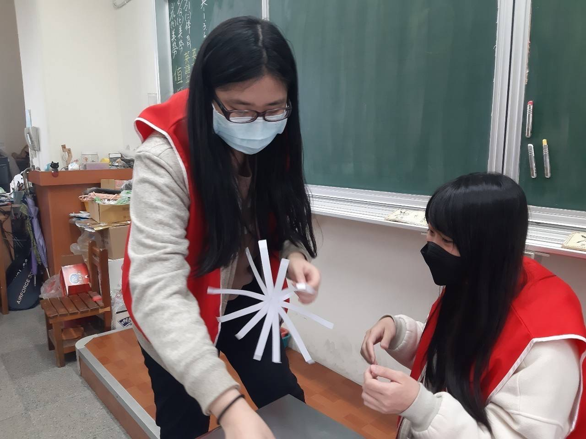
➜
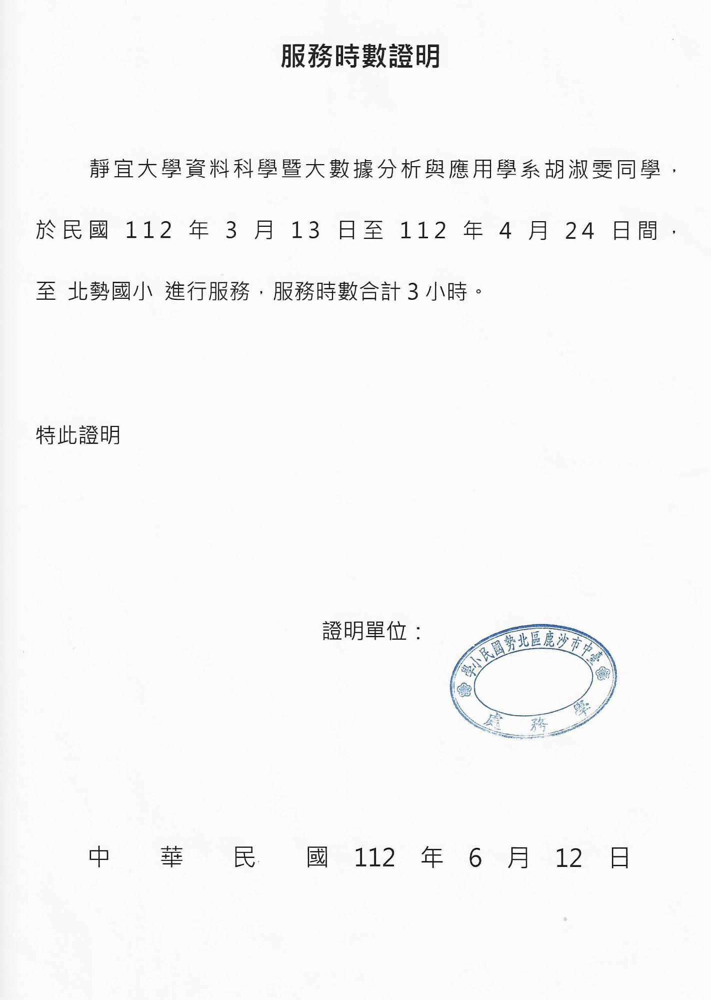
在小學早自習的時段走入教室，帶著他們手作，雖然可能每次活動都有一些小意外，但是意外可以讓活動變得有趣，也看到其他人為了活動而付出心力，認真的教學，整個過程十分的融洽。30字心得。30字心得。
蓋夏圖書館 導覽員
時間：2023.9.21
地點：靜宜 蓋夏圖書館
職位：導覽人員
佐證資料：服務證書
地點：靜宜 蓋夏圖書館
職位：導覽人員
佐證資料：服務證書
三年下學期來應徵導覽員，帶高中或是本校新生介紹蓋夏圖書館的Ｂ1～F
3，一場約20分鐘，而這場導覽要外加教新生們找書，連續兩場，其中自我檢討跟改進，希望自己能表現更好。
➜
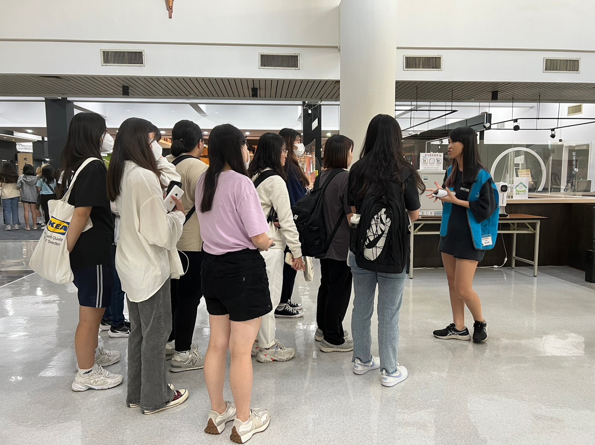
➜

➜
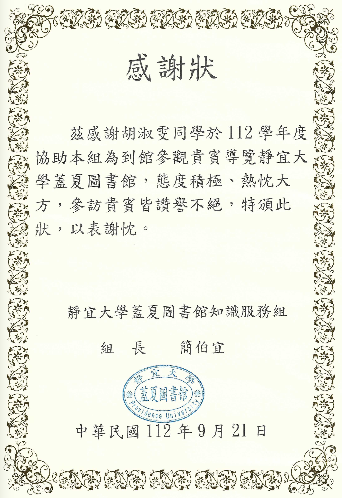
三年下學期來應徵導覽員，帶高中或是本校新生介紹蓋夏圖書館的Ｂ1～F
3，一場約20分鐘，而這場導覽要外加教新生們找書，連續兩場，其中自我檢討跟改進，希望自己能表現更好。
2022北部大學博覽會
時間：2022.3.5~6
地點：台大綜合體育館
職位：資科系志工
佐證資料：志工證明
地點：台大綜合體育館
職位：資科系志工
佐證資料：志工證明
大二跟著學校郭珈妤老師跟黃秋杰老師到台北幫忙系上招生，自己也觀察其他大學的特色，自己也樂在其中，還參加其他學校的抽獎，感覺變成高中生。

➜

➜
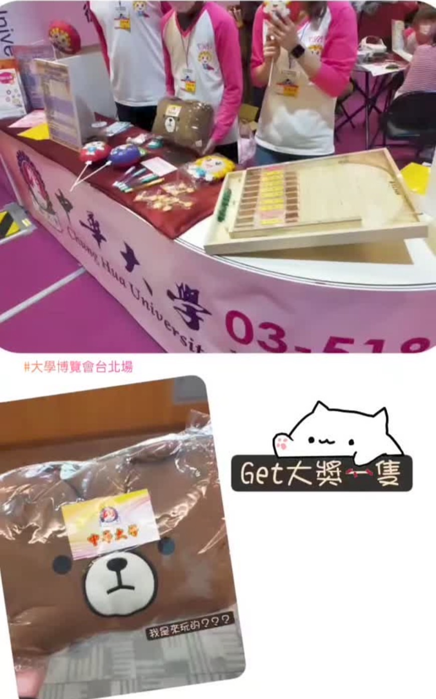
➜
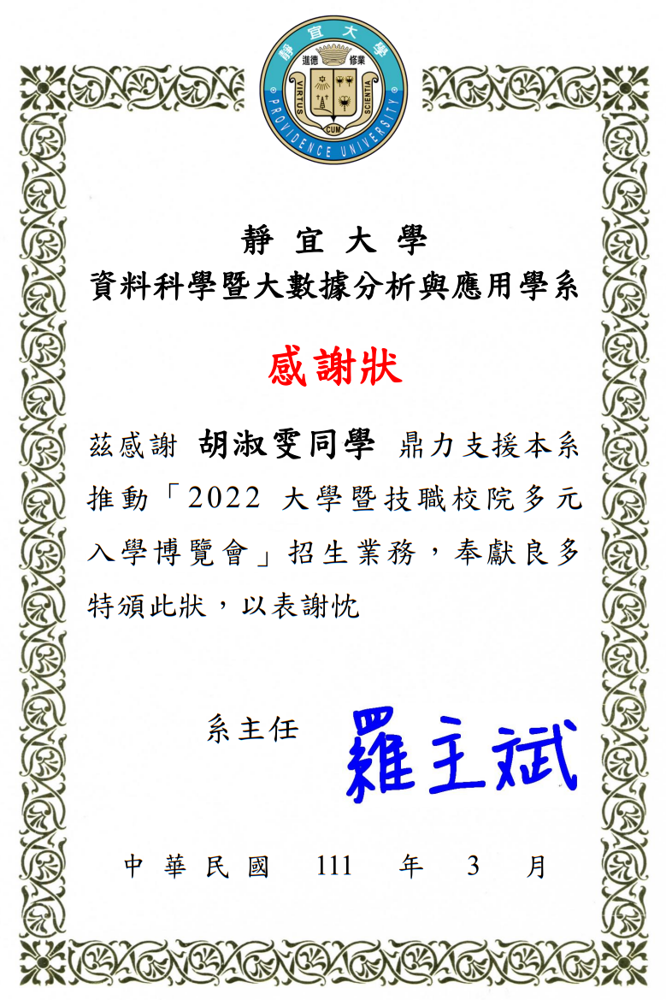
大二跟著學校郭珈妤老師跟黃秋杰老師到台北幫忙系上招生，自己也觀察其他大學的特色，自己也樂在其中，還參加其他學校的抽獎，感覺變成高中生。
111-1心靈成長營
時間：2022.10.15~16
地點：宜蘭聖母山莊
職位：營隊隊輔＋工作人員
佐證資料：證書
地點：宜蘭聖母山莊
職位：營隊隊輔＋工作人員
佐證資料：證書
大二時自己是小隊員，大三自己跑來當隊輔兼工作人員，想再次踏入山林中享受自然外，對自己而言是個療癒之旅。
 <
<➜

➜
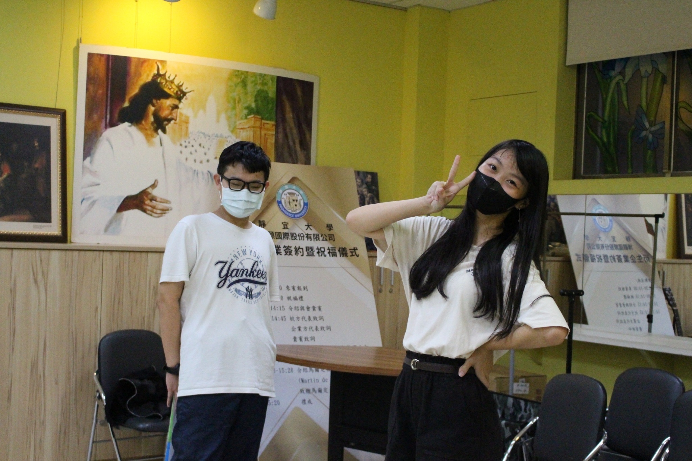
➜

➜
大二時自己是小隊員，大三自己跑來當隊輔兼工作人員，想再次踏入山林中享受自然外，對自己而言是個療癒之旅。
幹部經歷
109
副班代
110
學生議員
110
宿舍幹部
111-1
學社部長


活動總召
資科系抽直屬總召
第一次當總召，對很多事情很陌生，但是因為有同學的陪伴，雖然是線上辦理，但是準備的很多，希望能給大一們找到一個好直屬。
111-1社團博覽會總召
第一次辦理大型活動共有36個社團來參與這次活動，這也是學生會的第一個活動，跟著剛認識不久的同伴，同心協力完成，也在之中學習從老師身上學習經驗，希望能圓滿完成活動。

➜

靜宜66週年校慶園遊會總召
第66週年的校慶主題「新青春●主動出擊」名字是當時辦社博所想的，希望在新的環境，能主動揮灑青春汗水去追尋自己的目標。
大學社團
火舞魅力研究社

➜
➜
當初覺得火舞很帥，那看別人帥不如自己也變成那樣，入社ㄧ學期玩遍了所有道具並都會一些基礎，大二當社團美宣，上了兩場表演，三場工作人員，對我來說火舞社是我大學社團的代表。
美工社

➜
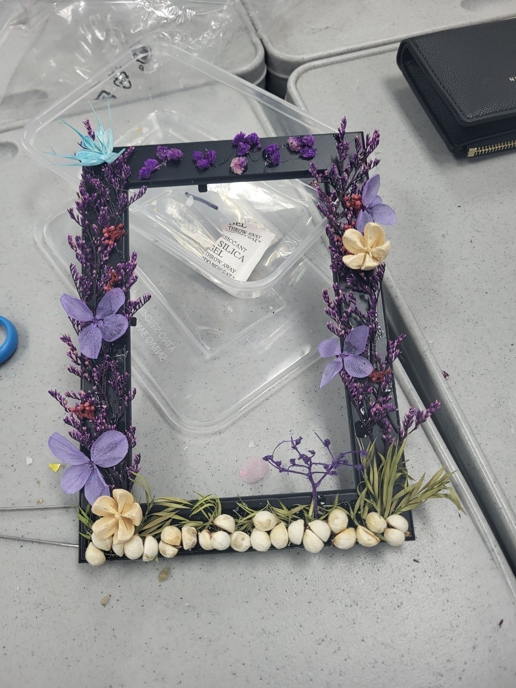
因為自己對手工很有興趣所以一直想加入，直到四年級規劃要去實習，再不加入可能會成為遺憾，選了兩堂有興趣的袖珍屋跟乾燥花相框，袖珍屋意外選到最難的就拍了縮時錄影。
企業實習
✩幔氏布緹有限公司✩
----公司簡介----
【MSBT 幔室布緹】織品窗簾家飾公司,累積多年經營歐、亞之間紡織家飾成品貿易的經驗,熟知歐洲室內裝潢趨勢與流行脈動。於 2010 年 5 月成立「幔室布緹有限公司 Maison Boutique Co., Ltd.」,期望運用豐富多元的後台資源,引進各式變化的窗簾產品,由年輕的團隊主導經營,服務追求歐系時尚窗飾的消費大眾。
地址:326桃園市楊梅區楊湖路一段367巷15-1號
電話:03-4880250
信箱:service@msbt.com.tw
-----工作內容-----
1.初期
- 照著新官網模版開發網頁
- HTML+CSS熟悉後，就是JavaScript效果
- 除了原生JS還有jquery語法
- 前端與後端伺服器溝通的技術AJAX
2.現在
換成WooCommerce+Porto主題來製作，每周都有1~2次頁面製作教學，也會參加公司的定時會議，有時也有講座。
-----實習動機-----
1.公司
當時面試時，面試官(之後要負責帶領我工作的工程師)說了一句:「 這間公司的網路跟前後端主要都是我負責的。」，心想如果錄取，我一定會選擇這間公司，因為這位工程師能力精煉，可以學到很多。
除了基礎的前端之外，可能能接觸到自己較薄弱的後端(當時前後端都有在招人)。
除了基礎的前端之外，可能能接觸到自己較薄弱的後端(當時前後端都有在招人)。
2.自我考量
- 當時認為數據分析要會後端，而後端要會一點前端基礎。
- 當時找的數據分析工作多數也是網頁前端。
- 累積業界的工作經驗。
- 想學職場溝通技巧與團隊合作。
- 想知道自己的能力跟面對工作的責任心。
- 想為以後升學或求職先做準備。
-----歷程-----
✩入職
我的網頁開發能力並不高端(當時面試作品)，而公司招募這個職位主要要有「 自主學習能力」而我因:
1.參與多項活動：
代表我是個願意付出時間精神去完成事務的人
2.排名優秀且大學三年已完成必要學分：
證明一定的學習能力，且可以專心實習而錄取
✩起初
工程師預計三天完成網頁，而我卻用了一周，自己有些慚愧，並努力提升專業能力。
聽了主管跟公司姐姐的建議，開始改善做筆記的習慣跟寫工作紀錄的方式，第二次寫網頁模板有在預定的時間完成。
✩教學方式-遇到不會再去請教工程師
能自己去思考評估作法是否合適恰當，要有自己的想法，而不是一味照要求做。
當時大約三天~一周的時間學一種語法跟會運用。
✩其他
一開始開會，看著前輩們報告工作內容，觀察他們的談吐及了解他們所說的內容。學習使用淺顯易懂的詞語表達，讓他人能清楚了解跟展示做法跟問題，訓練表達能力。
✩總結
現今SEO十分受重視，自己未進公司前沒接觸到這類的內容，而前端對於SEO很重要，自己也盡快去了解跟學習相關概念。
-----Skills-----
Skills
- HTML
- CSS
- JavaScript
- jQuery
- AJAX
- WordPress
Certifications
Google Analytics(分析)進階
專題
✩校友對學校的滿意度調查✩
大三時，擔任李名鏞老師的科技部計畫助理，其中自己完成的分析報告就是住要是本校靜宜大學的「 校友對學校的滿意度調查」，運用了Duncan 事後比較法，跟一些問卷回答轉為數值分析的手法，在整理成PPT跟WORD檔案，由於本系是大四才做專題，自己去企業實習，經過跟老師討論決定以此分析代替。
- - 一、調查對象 - -
調查對象為各系110學年度應屆畢業校友，總計2638人，其中大學部畢業生有2,399人，碩士班畢業生有258人，博士班1人。
成功調查1912人，佔全體畢業生人數的99.3%，其中大學部1752人(99.3%)，碩士班/博士班159/1人(99.6%)。
- - 二、調查方法 - -
調查施測期間在111年01月-111年9，掃描QR code方式上網填寫問卷，以問卷調查法進行調查。本年度調查與畢業生離校手續結合，以填寫線上問卷方式進行調查，或發送問卷至個人電子信箱邀請至特定網址填寫。
- - 三、用運圖表 - -
- 基礎表格-人數統計表
- 直方圖-
- 折線圖-歷年趨勢圖
- - 四、分析運用 - -
- ANOVA-顯著結果、平均值
- 由Duncan檢定-滿意度高低
- - 五、其他應用 - -
- excel-問卷問題轉為數值分析
- R-分析及資料輸出
- - 六、分析流程 - -
---樣本人數統計---
Q:問卷中該科系人數占全校比例?在該學院占比例?
本校六個學院，統計該系人數後，同學院相加
1.該系人數/樣本總數
2.該系人數/該學院總數
1.該系人數/樣本總數
2.該系人數/該學院總數
全校畢業生在各主要項目意見分析表
整體滿意指數 ＝ (系滿意指數+ 校滿意指數)÷2
系滿意指數 ＝ (調整之‘系滿意平均’+ 系教學評價+ 系競爭力評價)÷3
校滿意指數＝ (調整之‘校滿意平均’+ 校教學評價+ 校競爭力評價)÷3
系滿意平均為一至三大項之平均值，校滿意平均為四至七大項之平均值
系滿意指數 ＝ (調整之‘系滿意平均’+ 系教學評價+ 系競爭力評價)÷3
校滿意指數＝ (調整之‘校滿意平均’+ 校教學評價+ 校競爭力評價)÷3
系滿意平均為一至三大項之平均值，校滿意平均為四至七大項之平均值
每個主項目中都有幾項細項項目，都要求平均值跟標準差。
---校系就學選擇評估之分析---
絕對不會比例、應該不會比例、應該會比例、絕對會比例
這四項比例算完後，再計算“會”的比例(共5 項)
各學院畢業生對系校滿意度之差異分析
列出ANOVA得到差異性的顯著結果以及各院在各項目得到的平均值
對於無顯著差異的項目，列出全校平均數作為參考，對有顯著差異的項目
標出由Duncan檢定後得到五院中滿意度較高，以及滿意度較低的院別
(達顯著水準的才標示)
---各學系分析結果---
該學院中的科系分別敘述完人數占比後
再計算問卷中的滿意度與院所、全校做對比
---全校各學系對校系滿意度整體結果---
根據近五年各系
整體指數、系評量指數、校評量指數、以及再選擇意願
等四項成績的趨勢圖進行排名，查看各系趨勢變化
整體指數、系評量指數、校評量指數、以及再選擇意願
等四項成績的趨勢圖進行排名，查看各系趨勢變化
其他課堂表現
實驗設計
資訊:大二選修 3學分
老師:李名鏞 老師"
分數:學期94分 (班1)
老師:李名鏞 老師"
分數:學期94分 (班1)
分組報告：貢獻100%
期末報告：預測-竹槍射擊長遠
主要1.魚骨圖2.確認交互作用
確認因為主題我們心血來潮穿著恐龍裝報告也讓老師笑一下。
期末報告：預測-竹槍射擊長遠
主要1.魚骨圖2.確認交互作用
確認因為主題我們心血來潮穿著恐龍裝報告也讓老師笑一下。

教學
網頁作品
動機
- 實習工作為網頁前端實習生
- 證明程式撰寫能力，和基礎美編架構
- 希望藉由作品能與其他考生有所區別
- 希望藉教授能有更佳的閱讀體驗
運用技術
- 輪播效果
- 左右切換(教學經驗)
- 淡入/淡出(總召、幹部)
- 自動撥放(All)
- AJAX後端讀取
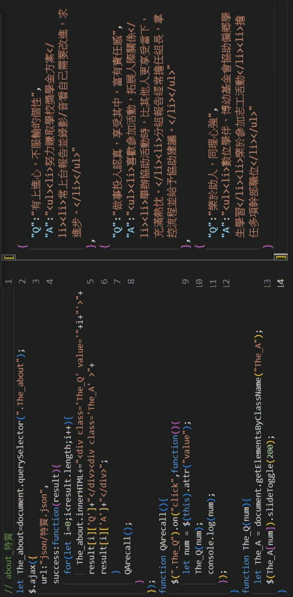
資料用成JSON格式再用AJAX引入
recall寫js開闔 - 下拉式開闔
- overflow-x:auto x軸若超出範圍為卷軸模式(副主題、圖片)
- ID 錨點
- RWD響應式
程式
- HTML
- CSS
- JavaScript
- -jquery
- -bootstrap
Skill
程式
網頁相關
其他
成績單


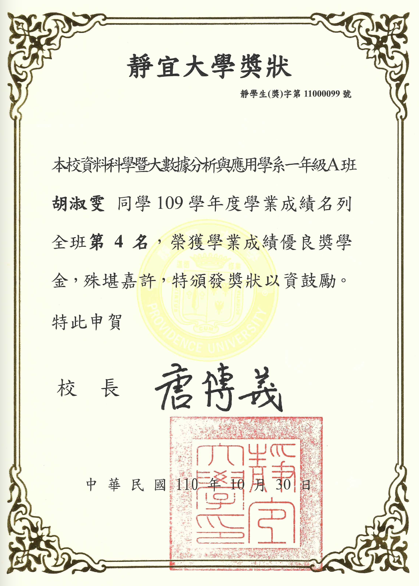


證照
about me
基本資料
生日：90.10.08
性別：Female
戶籍地：
高雄市內門區內豐里110號
居住地：桃園市楊梅區青年路3巷1號
ＡＢＯＵＴ ＭＥ
高雄人
學歷
高中：高雄市立中山高級中學
狀況：普通科 已畢業
大學：台中私立靜宜大學
科系：資料科學暨大數據分析與應用學系
狀況：四年級 在學中
獎助學金
基本資料
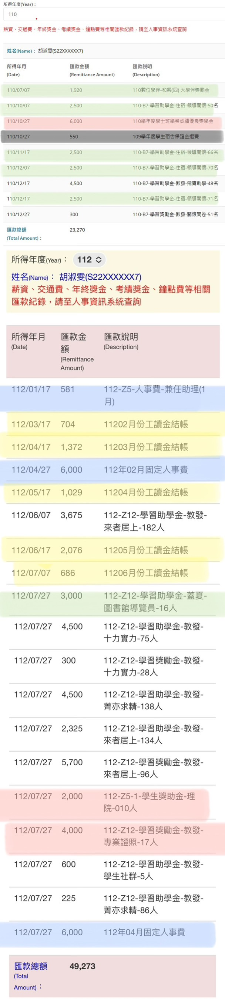
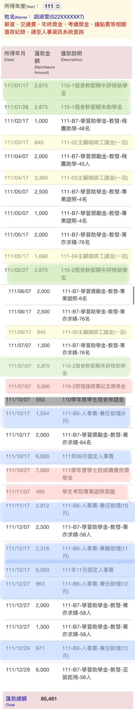
110學年：2,3270元
111學年：8,5481元
112學年：4,9273元